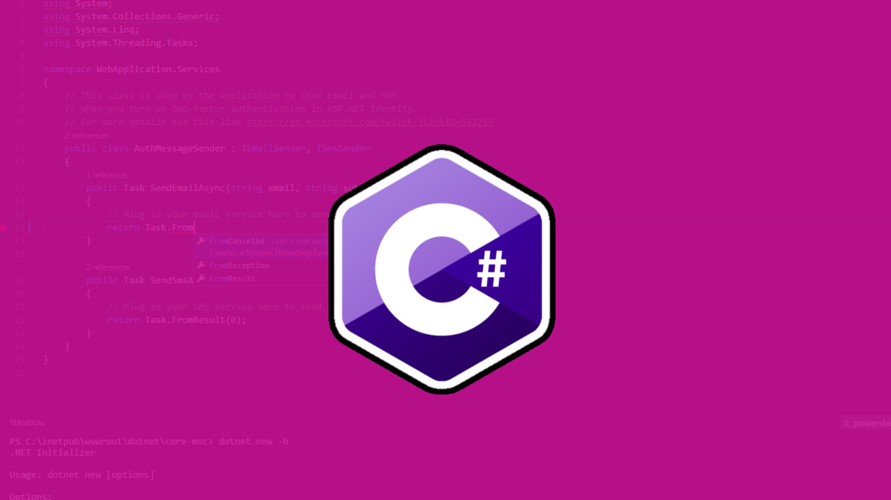

C#
En cuanto a C# debemos aclarar que se trata de un lenguaje de programación creado por Microsoft, y que por norma general suele utilizarse en entornos empresariales como en instituciones gubernamentales, entidades bancarias o sanitarias.
Pronunciado “C Sharp”, fue desarrollado por Microsoft e introducido en el mercado en 2002 con la versión 1.0 de .NET Framework. Desde entonces, C # ha pasado por varias revisiones, correspondientes a cada actualización de .NET.
Este lenguaje de programación posee características como C, pero orientado a objetos y caracterizado, principalmente, por su modernidad y sencillez. Estas son las claves que le hacen posicionarse en el top 5 de lenguajes de programación preferidos en la actualidad.
Ventajas de C#
Este lenguaje de programación es muy utilizado en la industria del gaming, la robótica, la impresión 3D, los controladores y las aplicaciones de escritorio no solo en Windows, sino también en iOS y en Android. Es, por lo tanto, muy versátil, y una de sus principales ventajas es que, si ya dominas Java, te será muy fácil aprender a programar en C#, por lo que te recomendamos no perderlo de vista.
Un poco de su historia:
En enero de 1999, Anders Hejlsberg formó un equipo para construir un nuevo lenguaje en ese momento llamado Cool, que en inglés significaba “lenguaje orientado a objetos tipo C”. Microsoft había considerado mantener el nombre “Cool” como el nombre final del lenguaje, pero decidió no hacerlo por razones de marca registrada.
Para cuando el proyecto .NET se anunció públicamente en la Conferencia de Desarrolladores Profesionales de julio de 2000, el lenguaje había sido renombrado como C#, y las bibliotecas de clases y el tiempo de ejecución de ASP.NET habían sido portados a C #.
El principal diseñador y arquitecto principal de C # en Microsoft es Anders Hejlsberg, en entrevistas y documentos técnicos, ha declarado que las fallas en la mayoría de los lenguajes de programación más importantes (por ejemplo, C ++, Java, Delphi y Smalltalk) impulsaron los fundamentos del Common Language Runtime (CLR), que, a su vez, impulsó el diseño del lenguaje C # sí mismo.